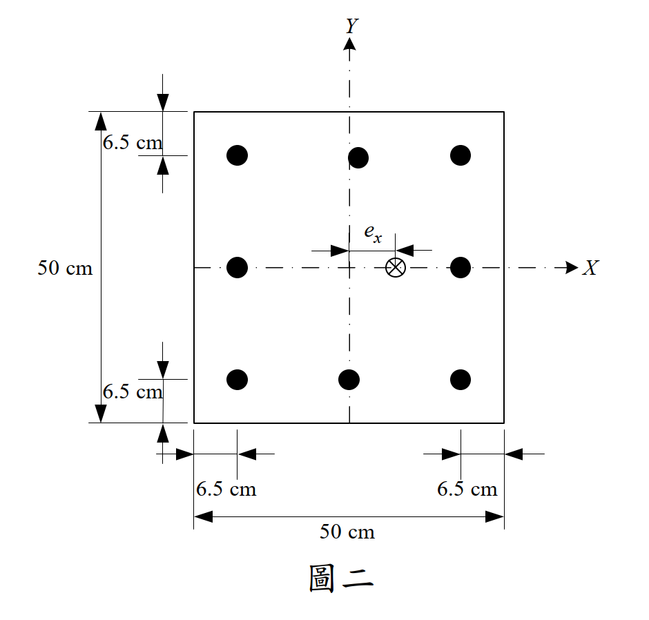
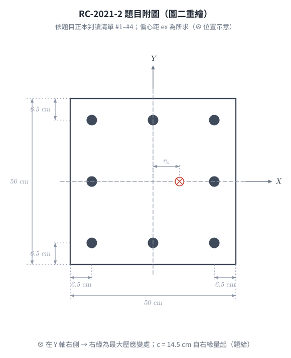
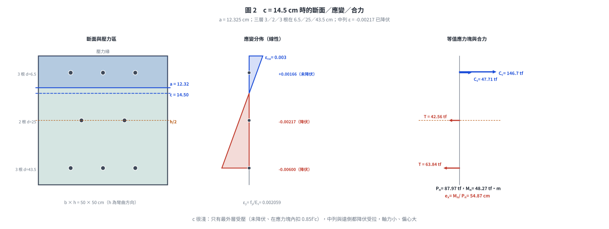

📄 題目正本：考卷原文・附圖・判讀清單（已確認）
RC-2021-2 題目正本
本檔只記錄考卷上寫了什麼、圖上畫了什麼，不含任何解法。解析見同資料夾
RC-2021-2.md。
判讀清單已經使用者確認（凍結）；本檔原則上不再修改（改動須回考卷原圖並記 log）。
| 項目 | 內容 |
|---|---|
| 考卷 | raw/exams/RC-2021_鋼筋混凝土設計與預力.pdf 第 2 頁（頁次 4－2），第二題 |
| 考年 | 民國 110 年（2021） |
| 配分 | 25 分 |
| 附圖 | RC-2021-2-fig-1.png（圖二） |
| 判讀狀態 | 已確認（2026-11-14 使用者確認；無不確定項；轉錄 2026-11-14；PyMuPDF 110 dpi 全頁目視＋抽出文字核對，附圖 400 dpi 放大，鋼筋位置讀 PDF 向量座標；盲讀後才比對既有解析） |
1. 考卷原文（逐字）
二、已知一方形柱採用如圖二所示斷面，配置有 8 根 D25（#8，$A_b$ = 5.067 cm²）縱向鋼筋，承受偏心軸壓力，所使用混凝土 $f'_c$ = 280 kgf/cm²，$E_c=12000\sqrt{f'_c}$，鋼筋 $f_y$ = 4200 kgf/cm²，$E_s$ = 2.04×10⁶ kgf/cm²，若該斷面破壞時，中性軸與最大混凝土壓應變處之距離為 14.5 cm，試求該柱破壞時之軸壓力偏心距 $e_x$。（25 分）
2. 考卷給的公式、附表與參數
- 題文數值：8-D25（#8），$A_b=5.067$ cm²；$f'_c=280$ kgf/cm²；$E_c=12000\sqrt{f'_c}$（照錄）；$f_y=4200$ kgf/cm²；$E_s=2.04\times10^6$ kgf/cm²；$c=14.5$ cm。
- 卷首：「作答規範：依據內政部於民國 110 年 3 月 2 日公布之『混凝土結構設計規範』或中國土木水利工程學會『混凝土工程設計規範與解說（土木 401-100）』作答，未依上述規範作答，不予計分。」
- 沒有給：$\varepsilon_{cu}$、$\beta_1$。
- 卷首注意事項：㈠可以使用電子計算器。㈡不必抄題，作答時請將試題題號及答案依照順序寫在試卷上，於本試題上作答者，不予計分。㈢本科目除專門名詞或數理公式外，應使用本國文字作答。
3. 附圖

圖面文字照錄：「Y」「X」「$e_x$」「6.5 cm」（四處）「50 cm」（兩處）「圖二」。
4. 判讀清單
| # | 項目 | 判讀 | 圖上／題文依據 | 把握 |
|---|---|---|---|---|
| 1 | 斷面 | 50×50 cm 方形 | 尺寸線（PDF 斷面 247.1–388.4 pt） | 確定 |
| 2 | 鋼筋配置 | 上排 3、下排 3、中間高度左右各 1，共 8-#8；最外鋼筋中心距各邊 6.5 cm → 沿 X 向三層：$x=6.5$ cm（3 根）、25 cm（2 根）、43.5 cm（3 根） | 6.5 cm 尺寸線；數圓點 | 確定 |
| 3 | 上排中間鋼筋位置 | 圖上畫在 Y 軸右側約 1.5 cm（x＝322.0 pt，斷面中心 317.75 pt；下排中間在 317.8 pt），判讀為畫圖偏差，與下排中間同在 Y 軸上 | PDF 座標 | 確定（解讀） |
| 4 | 載重位置與受壓側 | ⊗ 在 X 軸上、Y 軸右側 → 繞 Y 軸彎曲，右緣為最大壓應變處；$e_x$ 自 Y 軸（斷面中心）量起 | 圖二 | 確定 |
| 5 | 中性軸深度 | 自右緣量 $c=14.5$ cm | 題文 | 確定 |
| 6 | 「破壞時」 | 斷面達標稱強度（最大壓應變 $\varepsilon_{cu}$），$e_x=M_n/P_n$（斷面對稱，形心＝塑性中心） | 題文 | 確定（解讀） |
| 7 | $E_c=12000\sqrt{f'_c}$ | 題給，強度計算用不到 | 題文 | 確定 |
| 8 | 考卷沒有給 | $\varepsilon_{cu}$、$\beta_1$ 需依規範自行採用 | 題文 | 確定 |
轉錄：2026-11-14（RC-U1-2 題目正本推廣・批 1）
確認：2026-11-14 使用者確認（RC-U1-2 題目正本推廣・批 1，關卡一）
考題編號：RC-2021-2
主分類： RC-U1-2 RC 柱強度分析與設計
副分類： 無
設計法： USD 強度設計法
標籤： 偏心軸壓 偏心距求解 P-M互制 中性軸位置 鋼筋應變分析 壓縮區鋼筋淨力 大偏心
1. 題目（考卷原文見題目正本）
考卷原文、公式／附表、附圖與判讀清單（已確認）見
RC-2021-2-problem.md。本節只列解題時最容易讀錯的地方與本解使用的記號；題意以題目正本為準。

重繪自考卷附圖，依題目正本判讀清單；攔下受壓側判反、偏心距量測基準弄錯的錯誤。
常見誤讀
| 項目 | 正確判讀 | 常見誤讀 |
|---|---|---|
| 受壓側 | ⊗ 在 Y 軸右側 → 右緣為最大壓應變處，$c=14.5$ cm 自右緣量起（判讀 #4、#5） | 自左緣量 $c$ |
| 鋼筋層 | 沿 X 向三層：6.5 cm（3 根）、25 cm（2 根）、43.5 cm（3 根）（判讀 #2） | 把中間層當 3 根 |
| 偏心距 | $e_x=M_n/P_n$，自 Y 軸（斷面中心）量起（判讀 #6） | 自鋼筋或邊緣量起 |
本解記號： $b=h=50$ cm；自壓力面（右緣）$d_1=6.5$（3 根）、$d_2=25$（2 根）、$d_3=43.5$ cm（3 根）；$A_b=5.067$ cm²；$c=14.5$ cm。
2. 考題核心精神與出題者意圖 (Core Concepts & Examiner's Intent)
核心觀念： 由已知中性軸深度 $c$，逆推各排鋼筋應力 → 計算 $P_n$、$M_n$ → 求偏心距 $e_x = M_n/P_n$。
出題者意圖：
- 測驗考生能否從已知 $c$ 出發，不需要試誤法，直接求 $P_n$、$M_n$
- 考驗壓縮區鋼筋的「淨壓力」處理（需扣除 $0.85f'_c$）
- 確認中間排鋼筋（位於形心）應變是否達降伏
3. 解題戰略地圖與陷阱分析 (Strategic Roadmap & Trap Analysis)
作戰計畫：
Step 1：確定中性軸、β1、a
Step 2：計算各排鋼筋應變，判斷是否降伏
Step 3：計算各排鋼筋淨力
Step 4：求 Pn（水平力平衡），取矩求 Mn
Step 5：ex = Mn/Pn
關鍵陷阱：
| # | 陷阱 | 應對策略 |
|---|---|---|
| ⚠1 | 壓縮區鋼筋（右列）位於應力塊內：需用淨壓力 $f_{s,\text{net}} = f_s - 0.85f'_c$ | 確認 $d_s < a$ → 使用淨力 |
| ⚠2 | 中間列（x=25）鋼筋位於截面形心，對彎矩無貢獻 | 力矩臂為零，只貢獻 $P_n$ |
| ⚠3 | 中間列應變是否達降伏須驗算（$|\varepsilon_s| > \varepsilon_y$？） | 本題 $|\varepsilon_{\text{center}}| = 0.00217 > \varepsilon_y = 0.00206$ → 剛好降伏 |
| ⚠4 | $e_x$ 可能 $> h/2 = 25$ cm（大偏心），不必驚訝 | 大偏心柱屬拉力控制，$c$ 小，$e_x$ 大 |
3.5 變數層次分析 (Variable Hierarchy Analysis)
複習提示：第一次解題後，在每個卡住的知識點旁標記
⚠；第二次複習時只看有⚠的項目。
最終目標
由已知 c = 14.5 cm，求各排鋼筋應力 → Pn、Mn → ex = Mn/Pn
本題關鍵公式（依計算順序）
$$\text{Step 1：} \boxed{a} = \beta_1 c = 0.85\times14.5$$
$$\text{Step 2：各排應變} \quad \varepsilon_{si} = 0.003\times\frac{c - d_i}{c}, \quad \varepsilon_y = \frac{f_y}{E_s}$$
$$\text{Step 3：各排應力（壓縮區淨力）} \quad \boxed{f_{s1,\text{net}}} = \boxed{f_{s1}} - 0.85f'_c \;\;(d_1 < \boxed{a})$$
$$\text{Step 4：軸力} \quad \boxed{P_n} = 0.85f'_c\cdot\boxed{a}\cdot b + A_{s1}\cdot\boxed{f_{s1,\text{net}}} - A_{s2}\cdot f_y - A_{s3}\cdot f_y$$
$$\text{Step 5：彎矩（對形心取矩）} \quad \boxed{M_n} = C_c\!\left(25-\frac{\boxed{a}}{2}\right) + C_{s1}(25-d_1) + T_3(d_3-25)$$
$$\text{Step 6：偏心距} \quad \boxed{e_x} = \frac{\boxed{M_n}}{\boxed{P_n}}$$
L1：題目直接給定
| 符號 | 數值 | 說明 |
|---|---|---|
| $h = b$ | 50 cm | 方柱邊長 |
| $c$ | 14.5 cm | 直接給定的中性軸深度 |
| $f'_c$ | 280 kgf/cm² | |
| $f_y$ | 4200 kgf/cm² | |
| $E_s$ | $2.04\times10^6$ kgf/cm² | |
| $A_b$ | 5.067 cm² | D25 |
| 保護層 | 6.5 cm（至鋼筋中心） | 圖二 |
L2：需知識點推導
| 符號 | 公式／來源 | 卡關? |
|---|---|---|
| $\beta_1$ | $f'_c = 280$ → 0.85（臨界值） | |
| $a$ | $0.85\times c = 0.85\times14.5$ | |
| $\varepsilon_y$ | $f_y/E_s = 4200/2{,}040{,}000$ | |
| $d_1, d_2, d_3$ | 各排距壓縮面：6.5, 25, 43.5 cm | |
| $\varepsilon_{s1}$（右列） | $0.003(c-6.5)/c$（壓縮，正） | |
| $\varepsilon_{s2}$（中列） | $0.003(c-25)/c$（張拉，負） | |
| $\varepsilon_{s3}$（左列） | $0.003(c-43.5)/c$（張拉，負） | |
| 各排是否降伏 | 比較 $|\varepsilon_{si}|$ vs $\varepsilon_y$ | |
| $f_{s1,\text{net}}$ | $f_{s1} - 0.85f'_c$（因 $d_1 < a$） | |
| $C_c$ | $0.85f'_c\cdot a\cdot b$ | |
| $P_n$ | $C_c + C_{s1} - T_2 - T_3$ | |
| $M_n$ | 對形心取矩，$T_2$ 力矩臂 $= 0$ | |
| $e_x$ | $M_n/P_n$ |
L3：深層知識（不懂就卡住）
| 知識點 | 說明 | 卡關? |
|---|---|---|
| 壓縮區鋼筋淨力的物理意義 | 鋼筋佔據了混凝土應力塊面積，若直接加 $A_s\times f_s$，混凝土壓力就被重複計算一次；淨力 $= A_s(f_s-0.85f'c)$ 才是正確的額外貢獻 | |
| 中間排對彎矩無貢獻 | 中間排在截面形心（距壓縮面 25 cm = h/2），力矩臂 = 0；但仍貢獻 $P_n$（向下的張拉力） | |
| $\beta_1 = 280$ 的臨界值 | $f'_c = 280$ 是 $\beta_1$ 折減的起始點，此值本身仍用 0.85，超過才折減 | |
| 大偏心（張力控制）的物理意義 | $c = 14.5$ cm 遠小於平衡中性軸 $c_b$；軸力小、偏心大；$e_x > h/2 = 25$ cm 表示載重作用點在截面外側，為超大偏心情形 |
4. 步驟化詳細計算過程 (Step-by-Step Detailed Calculation)
Step 1：材料參數與等值應力塊
$$\beta_1 = 0.85 \quad (f'_c = 280 \text{ kgf/cm}^2 \le 280)$$
$$a = \beta_1 \times c = 0.85\times14.5 = \mathbf{12.325 \text{ cm}}$$
$$\varepsilon_y = \frac{f_y}{E_s} = \frac{4200}{2{,}040{,}000} = 0.002059$$
Step 2：各排鋼筋位置與應變
壓縮面在右側，各排鋼筋距壓縮面：
| 排別 | 距壓縮面 $d_i$ | 應變 $\varepsilon_{si}$ | 降伏？ | 應力 |
|---|---|---|---|---|
| 右列（3 根） | 6.5 cm | $+0.003\times\dfrac{14.5-6.5}{14.5} = +0.001655$ | 未降伏（壓縮） | $+3{,}376$ kgf/cm² |
| 中列（2 根） | 25 cm | $+0.003\times\dfrac{14.5-25}{14.5} = -0.002172$ | 剛好降伏（拉力） | $-4{,}200$ kgf/cm² |
| 左列（3 根） | 43.5 cm | $+0.003\times\dfrac{14.5-43.5}{14.5} = -0.006$ | 降伏（拉力） | $-4{,}200$ kgf/cm² |
右列詳算：
$$f_{s1} = E_s \times \varepsilon_{s1} = 2{,}040{,}000\times0.001655 = 3{,}376 \text{ kgf/cm}^2 \quad (\text{壓縮，未降伏})$$
驗算中列是否降伏：
$$|\varepsilon_{s2}| = 0.002172 > \varepsilon_y = 0.002059 \quad\Rightarrow\quad f_{s2} = -4200 \text{ kgf/cm}^2 \checkmark$$
右列在應力塊內？
$$d_1 = 6.5 \text{ cm} < a = 12.325 \text{ cm} \quad\Rightarrow\quad \text{右列在壓縮應力塊內，需用淨力}$$
$$f_{s1,\text{net}} = f_{s1} - 0.85f'_c = 3{,}376 - 0.85\times280 = 3{,}376 - 238 = \mathbf{3{,}138 \text{ kgf/cm}^2}$$
Step 3：各截面力
混凝土壓力：
$$C_c = 0.85\times f'_c\times a\times b = 0.85\times280\times12.325\times50 = 238\times616.25 = \mathbf{146{,}668 \text{ kgf}}$$
作用點距壓縮面：$a/2 = 6.163$ cm
右列鋼筋淨壓力：
$$C_{s1} = A_{s1}\times f_{s1,\text{net}} = (3\times5.067)\times3{,}138 = 15.201\times3{,}138 = \mathbf{47{,}701 \text{ kgf}}$$
中列拉力（位於形心）：
$$T_2 = A_{s2}\times f_y = (2\times5.067)\times4200 = 10.134\times4200 = \mathbf{42{,}563 \text{ kgf}}$$
左列拉力：
$$T_3 = A_{s3}\times f_y = (3\times5.067)\times4200 = 15.201\times4200 = \mathbf{63{,}844 \text{ kgf}}$$
Step 4：軸力 $P_n$
$$P_n = C_c + C_{s1} - T_2 - T_3$$
$$= 146{,}668 + 47{,}701 - 42{,}563 - 63{,}844$$
$$= 194{,}369 - 106{,}407 = \mathbf{87{,}962 \text{ kgf} = 87.96 \text{ tf}}$$
Step 5：彎矩 $M_n$（對截面形心取矩）
形心位於距壓縮面 $h/2 = 25$ cm 處，各力矩臂：
| 力 | 大小 (kgf) | 距壓縮面 (cm) | 距形心（正→壓縮側） | 力矩 (kgf·cm) |
|---|---|---|---|---|
| $C_c$ | 146,668 | 6.163 | $25-6.163 = +18.837$ | $+2{,}762{,}734$ |
| $C_{s1}$ | 47,701 | 6.5 | $25-6.5 = +18.5$ | $+882{,}469$ |
| $T_2$ | 42,563 | 25 | $25-25 = 0$ | $\mathbf{0}$ |
| $T_3$ | 63,844 | 43.5 | $43.5-25 = -18.5$（拉力向左） | $+1{,}181{,}114$ |
說明：$T_3$ 為拉力，力矩方向與 $C_c$ 相同（同向加大彎矩），故為正值。
$$M_n = 2{,}762{,}734 + 882{,}469 + 0 + 1{,}181{,}114 = \mathbf{4{,}826{,}317 \text{ kgf·cm} = 48.26 \text{ tf·m}}$$

圖 2 $c = 14.5$ cm 時的斷面／應變／合力。只有最外層受壓（在應力塊內、扣 $0.85f'_c$），中列已降伏受拉——攔下中列降伏判錯、壓力筋未扣位移混凝土的錯。
Step 6：偏心距
$$\boxed{e_x = \frac{M_n}{P_n} = \frac{4{,}826{,}317}{87{,}962} = \mathbf{54.87 \text{ cm}}}$$
驗算大偏心合理性：
平衡點中性軸深度（以有效深度 $d = 43.5$ cm 估計）：
$$c_b = \frac{6120}{6120 + 4200}\times43.5 = 0.5930\times43.5 = 25.79 \text{ cm}$$
$$c = 14.5 \text{ cm} \ll c_b = 25.79 \text{ cm} \quad\Rightarrow\quad \text{大偏心（拉力控制）}$$
大偏心柱的偏心距 $e_x > e_b$，可以超過 $h/2 = 25$ cm，本題 $e_x = 54.87$ cm 物理上合理。
5. 關鍵爭議點與進階探討 (Critical Issues & Advanced Discussion)
爭議點 1：中列鋼筋是否恰好降伏？
$|\varepsilon_{s2}| = 0.002172$ 比 $\varepsilon_y = 0.002059$ 大了 5.5%，確實已降伏。若只差一點點，應取 $f_{s2} = E_s|\varepsilon_{s2}|$ 而非直接取 $f_y$，本題可直接取 $-4200$ kgf/cm²。
爭議點 2：設計彎矩強度 $\phi M_n$ vs $M_n$
本題求的是標稱軸力 $P_n$ 和偏心距，不是設計強度。若題目問設計偏心距，則應用 $\phi P_n$ 和 $\phi M_n$（$\phi$ 依 $\varepsilon_t$ 決定）：
$$\varepsilon_t = 0.003\times\frac{43.5-14.5}{14.5} = 0.003\times2.0 = 0.006 \ge 0.005 \Rightarrow \phi = 0.90$$
進階：偏心方向確認
本題 $e_x = 54.87$ cm 是 X 方向偏心，比截面寬度 50 cm 還大，代表軸力 $P$ 作用點在截面右緣外側（超出右緣 4.87 cm）。這是純拉力控制情形，在橋梁柱、高層建築邊柱常見。
修正日期：2026-11-14（§1 改為指向題目正本，插入重繪附圖 figs/RC-2021-2-fig-1-problem.svg、改寫常見誤讀與本解記號；本行非答案勘誤）
圖解補繪：2026-11-14（向量圖 1 張〔圖 2 斷面／應變／合力〕，腳本 gen_RC-2021-2.py，可重跑；腳本檔尾對 §4 公佈值做 assert）